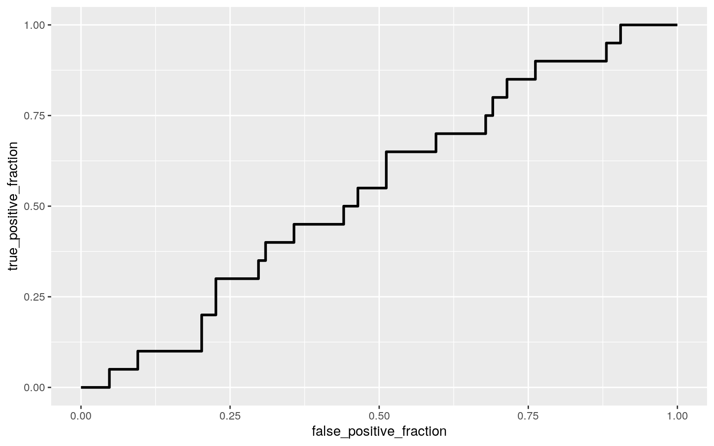
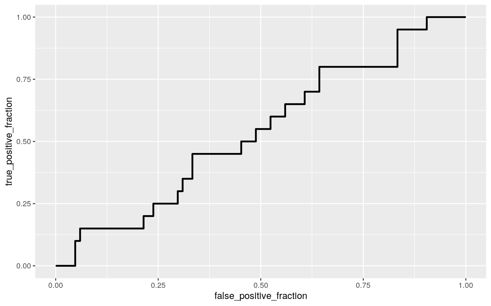

I have combined data sets for this project. I used these 3 data sets for Project 1 as well. The independent variables that are joined, common for all data sets, are year and country. The dependent variables I am assessing are country code, population(number of people in country), banking crisis incidence(binary), and number of vehicles produced in a year. I again chose these data sets to analyze the correlation between all of these variables over time and in different countries. The countries that I chose to study here are France, Argentina, Australia, Belgium, Brazil, Canada, China, Germany, India, Mexico, Italy, Japan, and Spain. I am looking at statistics for these countries only in the years 1960, 1970, 1980, 1990, 1995, 2000, 2005, and 2010. From my project 1 data set I have added some years to the set and also added some countries. There are 104 observations total. These data sets came from https://vincentarelbundock.github.io/Rdatasets/datasets.html As I said in my last project, with the COVID-19 pandemic occurring this year I have been made aware more than ever of how one event can cause a ripple effect that alters daily life in ways that are not always expected. Along that train of thought, during my research trying to find data sets to join for Project 1 I came upon these data sets and wondered if a banking crisis would decrease car production; or be associated with a change in population; and so on and so forth. I expect that the year is a strong indicator of vehicle production as well as population. I also expect that the occurrence of a banking crisis will have a negative effect on number of cars produced and be more common in certain years.
library(tidyverse)
library(dplyr)
library(readr)
countrypops <- read_csv("countrypops.csv")
countrypopulation<- countrypops %>%
arrange(year) %>%
filter(country_name=="India"| country_name== "Canada"|country_name== "Germany"|country_name=="Argentina"| country_name=="Belgium"| country_name=="Brazil"| country_name=="China"|country_name=="Australia"|country_name=="France"|country_name=="Spain"|country_name=="Mexico"|country_name=="Italy"|country_name=="Japan") %>%
filter(year=="1960"|year=="1970"|year=="1980"|year=="1990"|year=="1995"|year=="2000"|year=="2005"|year=="2010") %>%
select(year, country_name,country_code_2, population)%>%
rename("Country"=country_name, "Country Code"=country_code_2, "Year"=year)
countrypopulation## # A tibble: 104 x 4
## Year Country `Country Code` population
## <dbl> <chr> <chr> <dbl>
## 1 1960 Argentina AR 20619075
## 2 1960 Australia AU 10276477
## 3 1960 Belgium BE 9153489
## 4 1960 Brazil BR 72207554
## 5 1960 Canada CA 17909009
## 6 1960 China CN 667070000
## 7 1960 Germany DE 72814900
## 8 1960 Spain ES 30455000
## 9 1960 France FR 46814237
## 10 1960 India IN 449480608
## # … with 94 more rowslibrary(readr)
bankingCrises <- read_csv("bankingCrises.csv")
bankingcrisis<- bankingCrises%>%
arrange(year) %>%
pivot_longer(c("Algeria","Angola","Argentina", "Australia","Austria", "Belgium", "Bolivia", "Brazil", "Canada", "CentralAfricanRep","Chile", "China", "Colombia","CostaRica", "CoteDIvoire", "Denmark", "DominicanRepublic", "Ecuador", "Egypt","ElSalvador","Finland", "France", "Germany","Ghana","Greece", "Guatemala","Honduras","Hungary","Iceland","India", "Indonesia", "Ireland", "Italy","Japan","Kenya", "Korea", "Malaysia", "Mauritius", "Mexico", "Morocco", "Myanmar", "Netherlands", "NewZealand", "Nicaragua", "Nigeria", "Norway", "Panama", "Paraguay", "Peru","Philippines","Poland", "Portugal", "Romania", "Russia", "Singapore", "SouthAfrica", "Spain", "SriLanka", "Sweden", "Switzerland", "Taiwan", "Thailand", "Tunisia", "Turkey", "UK","Uruguay","US","Venezuela", "Zambia","Zimbabwe"), names_to="Country", values_to="count")%>%
filter(year=="1960"|year=="1970"|year=="1980"|year=="1990"|year=="1995"|year=="2000"|year=="2005"|year=="2010")%>%
filter(Country=="India"|Country=="Brazil"|Country=="Canada"|Country=="China"|Country=="Germany" | Country=="Belgium"|Country=="Argentina"|Country=="Australia"|Country=="France"|Country=="Spain"|Country=="Mexico"|Country=="Italy"|Country=="Japan")%>%
select(Country, year, count)%>%
rename("Banking Crises"=count, "Year"=year)
bankingcrisis## # A tibble: 104 x 3
## Country Year `Banking Crises`
## <chr> <dbl> <dbl>
## 1 Argentina 1960 0
## 2 Australia 1960 0
## 3 Belgium 1960 0
## 4 Brazil 1960 0
## 5 Canada 1960 0
## 6 China 1960 0
## 7 France 1960 0
## 8 Germany 1960 0
## 9 India 1960 0
## 10 Italy 1960 0
## # … with 94 more rowslibrary(readr)
mvprod <- read_csv("mvprod.csv")
vehicleProduction<- mvprod %>%
arrange(year)%>%
filter(country=="India"|country=="Canada"|country== "Germany"|country=="Brazil"|country=="China"| country=="Belgium"| country=="Argentina"| country=="Australia"| country=="France"|country=="Spain"|country=="Mexico"|country=="Italy"|country=="Japan")%>%
filter(year=="1960"|year=="1970"|year=="1980"|year=="1990"|year=="1995"|year=="2000"|year=="2005"|year=="2010")%>%
select(year, country, value)%>%
rename("Cars Produced"=value, "Year"=year, "Country"=country)
vehicleProduction## # A tibble: 104 x 3
## Year Country `Cars Produced`
## <dbl> <chr> <dbl>
## 1 1960 Argentina 89000
## 2 1960 Australia 204000
## 3 1960 Belgium 1000
## 4 1960 Brazil 49807
## 5 1960 Canada 397739
## 6 1960 China 22574
## 7 1960 France 1369210
## 8 1960 Germany 2056149
## 9 1960 India 51136
## 10 1960 Italy 644633
## # … with 94 more rowsOverallTable<- countrypopulation %>%
full_join(vehicleProduction) %>%
full_join(bankingcrisis)
view(OverallTable)library(rstatix)
group<- OverallTable$Year
DVs<- OverallTable %>%
select(population,`Cars Produced`)
sapply(split(DVs,group), mshapiro_test)## 1960 1970 1980 1990 1995 2000 2005
## statistic 0.5749212 0.5630714 0.624961 0.6432532
0.7528144 0.7979401 0.8292346
## p.value 4.010232e-05 3.198714e-05 0.000108466
0.0001588152 0.001977329 0.006443556 0.0154939
## 2010
## statistic 0.757017
## p.value 0.002198621manova1<-manova(cbind(OverallTable$population, OverallTable$`Cars Produced`)~Year, data=OverallTable)
summary(manova1)## Df Pillai approx F num Df den Df Pr(>F)
## Year 1 0.11487 6.5535 2 101 0.002108 **
## Residuals 102
## ---
## Signif. codes: 0 '***' 0.001 '**' 0.01 '*' 0.05 '.' 0.1
' ' 1summary.aov(manova1)## Response 1 :
## Df Sum Sq Mean Sq F value Pr(>F)
## Year 1 2.2194e+17 2.2194e+17 1.8053 0.1821
## Residuals 102 1.2539e+19 1.2294e+17
##
## Response 2 :
## Df Sum Sq Mean Sq F value Pr(>F)
## Year 1 1.0370e+14 1.0370e+14 12.153 0.0007241 ***
## Residuals 102 8.7038e+14 8.5331e+12
## ---
## Signif. codes: 0 '***' 0.001 '**' 0.01 '*' 0.05 '.' 0.1
' ' 1pairwise.t.test(OverallTable$`Cars Produced`, OverallTable$Year, p.adj= "none")##
## Pairwise comparisons using t tests with pooled SD
##
## data: OverallTable$`Cars Produced` and OverallTable$Year
##
## 1960 1970 1980 1990 1995 2000 2005
## 1970 0.4448 - - - - - -
## 1980 0.1843 0.5700 - - - - -
## 1990 0.0750 0.3045 0.6449 - - - -
## 1995 0.0987 0.3704 0.7422 0.8949 - - -
## 2000 0.0497 0.2252 0.5168 0.8510 0.7491 - -
## 2005 0.0248 0.1335 0.3479 0.6317 0.5411 0.7705 -
## 2010 0.0029 0.0243 0.0888 0.2119 0.1680 0.2880 0.4397
##
## P value adjustment method: noneThis MANOVA was conducted to determine the effect of the Year on the two dependent variables, cars Produced and population. The MANOVA did prove to be significant with a p-value of 0.0021, meaning that there are significant differences among the years category. Therefore, we can reject the null hypothesis that for both dependent variables the mean for each year are equal. Then a univariate ANOVA was performed, only the second response, cars produced, showed having a significant difference between at least 1 year categories. I overall conducted 11 hypothesis tests(1 MANOVA, 2 ANOVA, 8 t-tests). The probability that I made a Type-I error is 0.05, unadjusted. The bonferroni adjusted significance level is 0.05/11=0.0045 to maintain the error rate of 0.05.
MANOVA tests require many assumptions(6 to be exact) to be met. My data does not meet multivariate normality for the year category(n<25), based on the significance of my mshapiro test(p=0.002). I also do not think that all of my dependent variables have linear relationships with each other, population especially. I also am assuming that my data likely does not have homogeneity of within-group covariance matrices.
#subsetting the data
car_1970 <- c(219599, 475000, 7000,296000,192841,1159504, 87166, 3842247, 539132, 2750086, 76409, 1854252, 5289157, 916089)
car_2010 <- c(716540, 243495, 104814, 555302, 2342282, 2068189, 18264761, 5905985, 2387900, 2229421, 3557073, 838186, 9628920, 3981728)
mean(car_1970)## [1] 1264606mean(car_2010)## [1] 3773185logcar_2010<- log(car_2010)
logcar_1970<- log(car_1970)
(mean(car_2010)-mean(car_1970))## [1] 2508580set.seed(348)
car_randomizations <- data.frame(Production = c(car_2010, car_1970), LogProduction = c(logcar_2010,
logcar_1970), Decade = c(rep("2010", 14), rep("1970",
14)))
car_randomizations## Production LogProduction Decade
## 1 716540 13.482189 2010
## 2 243495 12.402852 2010
## 3 104814 11.559943 2010
## 4 555302 13.227267 2010
## 5 2342282 14.666636 2010
## 6 2068189 14.542184 2010
## 7 18264761 16.720484 2010
## 8 5905985 15.591477 2010
## 9 2387900 14.685925 2010
## 10 2229421 14.617252 2010
## 11 3557073 15.084449 2010
## 12 838186 13.638995 2010
## 13 9628920 16.080282 2010
## 14 3981728 15.197226 2010
## 15 219599 12.299558 1970
## 16 475000 13.071070 1970
## 17 7000 8.853665 1970
## 18 296000 12.598115 1970
## 19 192841 12.169621 1970
## 20 1159504 13.963503 1970
## 21 87166 11.375570 1970
## 22 3842247 15.161568 1970
## 23 539132 13.197716 1970
## 24 2750086 14.827143 1970
## 25 76409 11.243856 1970
## 26 1854252 14.432992 1970
## 27 5289157 15.481169 1970
## 28 916089 13.727869 1970car_randomizations %>% group_by(Decade) %>% summarize(means = mean(Production)) %>%
summarize(mean_difference = diff(means))## # A tibble: 1 x 1
## mean_difference
## <dbl>
## 1 2508580.ggplot(car_randomizations, aes(Production, fill = Decade)) + geom_histogram(bins = 6) +
facet_wrap(~Decade, ncol = 2)#mean difference
rand_car<-vector()
for(i in 1:5000){
new<-data.frame(Production=sample(car_randomizations$Production),Decade=car_randomizations$Decade)
rand_car[i]<-mean(new[new$Decade=="2010",]$Production)- mean(new[new$Decade=="1970",]$Production)
}
head(rand_car)## [1] -1022664.4 1422473.6 -1985641.4 573395.1 -1370924.9
2215107.4{
hist(rand_car, main = " ", ylab = " ")
abline(v = c(-2508580, 2508580))
}mean(rand_car > 2508580 | rand_car < (-2508580))## [1] 0.0564The null hypothesis is, the number of cars produced in 1970 and 2010 are the same. The alternative hypothesis is, the number of cars produced in 170 and 2010 are not the same. The resulting p-value of 0.0564 shows that we fail to reject the null hypothesis meaning there is not a significant difference in the number of cars produced in 1970 and 2010.
library(sandwich)
library(lmtest)
CenteredFit<- OverallTable
CenteredFit$YearCentered <- (CenteredFit$Year - mean(CenteredFit$Year, na.rm = T))
CenteredFit$PopulationCentered <- (CenteredFit$population - mean(CenteredFit$population, na.rm = T))
CenteredFit$CarsCentered <- (CenteredFit$`Cars Produced` - mean(CenteredFit$`Cars Produced`, na.rm = T))
fit<-lm(CarsCentered~YearCentered+ PopulationCentered, data= CenteredFit)
summary(fit)##
## Call:
## lm(formula = CarsCentered ~ YearCentered +
PopulationCentered,
## data = CenteredFit)
##
## Residuals:
## Min 1Q Median 3Q Max
## -3234458 -1646574 -523027 336214 13822572
##
## Coefficients:
## Estimate Std. Error t value Pr(>|t|)
## (Intercept) -7.779e-10 2.867e+05 0.000 1.00000
## YearCentered 5.902e+04 1.770e+04 3.335 0.00119 **
## PopulationCentered 7.329e-04 8.258e-04 0.887 0.37692
## ---
## Signif. codes: 0 '***' 0.001 '**' 0.01 '*' 0.05 '.' 0.1
' ' 1
##
## Residual standard error: 2924000 on 101 degrees of
freedom
## Multiple R-squared: 0.1134, Adjusted R-squared: 0.09582
## F-statistic: 6.458 on 2 and 101 DF, p-value: 0.002295coef(fit) ## (Intercept) YearCentered PopulationCentered
## -7.778801e-10 5.901938e+04 7.328842e-04#graphing
OverallTable%>%ggplot(aes(Year,population))+geom_point()+geom_smooth(method = 'lm',se=F)#checking assumptions
resids<-fit$residuals
fitvals<-fit$fitted.values
ggplot()+geom_point(aes(fitvals,resids))+geom_hline(yintercept=0, color='red')#testing variancebptest(fit) #equalvariancetest##
## studentized Breusch-Pagan test
##
## data: fit
## BP = 7.5636, df = 2, p-value = 0.02278ggplot(OverallTable, aes(Year+population, `Cars Produced`)) + geom_point()ks.test(resids, "pnorm", mean=0, sd(resids)) ##
## One-sample Kolmogorov-Smirnov test
##
## data: resids
## D = 0.21928, p-value = 9.064e-05
## alternative hypothesis: two-sidedcoeftest(fit, vcov. = vcovHC(fit))#robust standard errors, increases stadnard errors to fix assumptions, lowering T-statistic and increasing p-value ##
## t test of coefficients:
##
## Estimate Std. Error t value Pr(>|t|)
## (Intercept) -7.7788e-10 2.9608e+05 0.0000 1.0000000
## YearCentered 5.9019e+04 1.4825e+04 3.9811 0.0001294 ***
## PopulationCentered 7.3288e-04 1.4716e-03 0.4980
0.6195507
## ---
## Signif. codes: 0 '***' 0.001 '**' 0.01 '*' 0.05 '.' 0.1
' ' 1This linear regression model using two predictors is assessing both the effect of Year on Car Production controlling for population and the effect of population on Car Production controlling for Year. The resulting coefficient estimates show that mean/predicted car production for a country in an average year is .The best fitting plane for this data is modeled by the equation Cars Produced=-1.152e+08 + 59,019(Year)+0.0007329(population).The number of cars produced increases by 59,019 cars for every 1 year that passes. Then number of cars produced increases by .0007329 cars for a 1 person increase in population.
The proportion of variation in CAr Production variable that is explained by all of the predictors at once is 0.09582(adjusted R-squared value).
The null hypothesis in this test is that homoskedasticity is met. Based on the significant value of the Breusch-Pagan(tests for equal variance) test at 0.03174 we can reject the null hypothesis. The residual ggplot confirms this discrepancy. Moving from left to right the second ggplot, points seem to start to gather more closely suggesting that homoskedasticity is met. The Breusch-Pagan test suggests also that we can reject the null hypothesis that homoskedasticity is met because the p-value is significant at 0.02278. The ggplot shows that both variable result in a more speard out pattern when moving from right to left suggesting also that homoskedasticity has not been met.
After redoing the regression using robust standard errors the new p-value is 0.000129 for Year and 0.61955 for population. This means that we can reject the null hypothesis for year centered and fail to reject the null hypothesis for population centered after redoing the regression using heteroskedasticity robust standard errors. Increasing standard errors is done to help meet the assumptions of a linear regression. This adjusts in order to increase standard errors, decrease t-statistic, and increase p-statistic.
samp_bootstrap2<-replicate(5000,
{
boot_data2 <- sample_frac(CenteredFit, replace=T)
fit2 <- lm(CarsCentered~YearCentered+PopulationCentered, data=boot_data2)
coef(fit2)
}
)
samp_bootstrap2 %>% t %>% as.data.frame %>% summarize_all(sd)## (Intercept) YearCentered PopulationCentered
## 1 285160.2 13901.4 0.001330047samp_bootstrap2 %>% t %>% as.data.frame %>% pivot_longer(1:3) %>% group_by(name) %>%
summarize(lower=quantile(value,.025), upper=quantile(value,.975))## # A tibble: 3 x 3
## name lower upper
## <chr> <dbl> <dbl>
## 1 (Intercept) -523203. 607617.
## 2 PopulationCentered -0.00131 0.00361
## 3 YearCentered 32977. 86292.By bootstrapping the linear regression I aimed to use replacement to randomly sample rows from my data set. The estimated standard error for my intercept is 288055.6 cars. The estimated standard error for Year is 14128.67. The estimated standard error for population is 0.001321. I can be 95% sure that the intercept will fall between -5.357217e+05 and 5.752066e+05. I can be 95% sure that the population will fall between -1.311463e-03 3.561501e-03. I can also be 95% sure that the year will fall between 3.229477e+04 and 8.670292e+04.
fit3<-glm(`Banking Crises`~population+`Cars Produced`, data= OverallTable, family="binomial")
coeftest(fit3)##
## z test of coefficients:
##
## Estimate Std. Error z value Pr(>|z|)
## (Intercept) -1.4311e+00 3.3503e-01 -4.2717 1.94e-05 ***
## population -3.5010e-10 7.7850e-10 -0.4497 0.6529
## `Cars Produced` 2.5876e-08 7.9554e-08 0.3253 0.7450
## ---
## Signif. codes: 0 '***' 0.001 '**' 0.01 '*' 0.05 '.' 0.1
' ' 10.239/(1+0.239)## [1] 0.1928975exp(coef(fit3))## (Intercept) population `Cars Produced`
## 0.2390402 1.0000000 1.0000000probs<-predict(fit3,type="response")
table(predict=as.numeric(probs>.2),truth=OverallTable$`Banking Crises`)%>%addmargins## truth
## predict 0 1 Sum
## 0 60 15 75
## 1 24 5 29
## Sum 84 20 104OverallTable$logit<-predict(fit3,type="link")
OverallTable%>%ggplot()+geom_density(aes(logit,color=`Banking Crises`,fill=`Banking Crises`), alpha=.4)+
theme(legend.position=c(.85,.85))+geom_vline(xintercept=0)+xlab("logit (log-odds)")+
geom_rug(aes(logit,color=`Banking Crises`))library(plotROC)
ROCplot<-ggplot(OverallTable)+geom_roc(aes(d=`Banking Crises` ,m=population), n.cuts=0)
ROCplot
calc_auc(ROCplot)## PANEL group AUC
## 1 1 -1 0.5440476ROCplot1<-ggplot(OverallTable)+geom_roc(aes(d=`Banking Crises` ,m=`Cars Produced`), n.cuts=0)
ROCplot1
calc_auc(ROCplot1)## PANEL group AUC
## 1 1 -1 0.539881The coefficient estimates that resulted from the logistic regression show that for every one unit increase in population the log of the odds of a banking crisis occurring will decrease an estimated -3.5010e-10, if car production is held constant. Also for every one unit increase in car production the log of the odds of a banking crisis occurring will increase an estimated 2.5876e-08 if population is held constant.For population or cars produced equaling 0, odds of a banking crisis occurring is e^-1.4311= 0.2390. For a population equal to 1, the odds of a banking crisis occurring is e^(-1.4311-3.5010e-10)=0.239. Then for a cars production equal to 1, the odds of a banking crisis occurring is e^(-1.4311+2.5876e-08)=0.239. All of the changes warrant the same change in odds according to my math. Therefore all meaning that there is a 19.289% chance of a banking crisis occurring. When exponentiating the coefficient the 0.239 is confirmed.
The confusion matrix allows us to find sensitivity(true +/condition+), specificity(true-/condition-), and precision(true+/ predicted condition positive).
The accuracy. The Sensitivity (TPR) is the true positive rate, and is identified as (5/20)x100= 25%. The Specificity(TNR) is the true negative rate, meaning that it is the probability of a negative result for a country without a banking crisis, here it is (60/84)x100=71.429%. The Precision(PPV) is the proportion of countries in a specific year who are classified as having a banking crisis that actually are, this value is (5/29)x100=17.241%.
The density plot of the log odds is shown above, it adds to the proof that these variables population and car productivity are not related to banking crises.
After generating the ROC curve(plot) and calculating the AUC I have found that again this is a bad classification model. It forms a step-wise pattern that is practically diagonal meaning that these are not good predictors of banking crises. AUC is calculated to be 0.54404 for population, meaning there is a 0.544 probability that a random country having a banking crises has a higher predicted probability than a randomly selected country not having a banking crises. AUC is calculated to be 0.5399 for Cars Produced. A perfect model would be a perfect right angle in the top right corner. The AUC is the area under the curve, meaning that there is little separation between the FPR and the TPR. Banking crises occurrence and no banking crises occurrence basically have the same predicted outcome is what this shows.
…